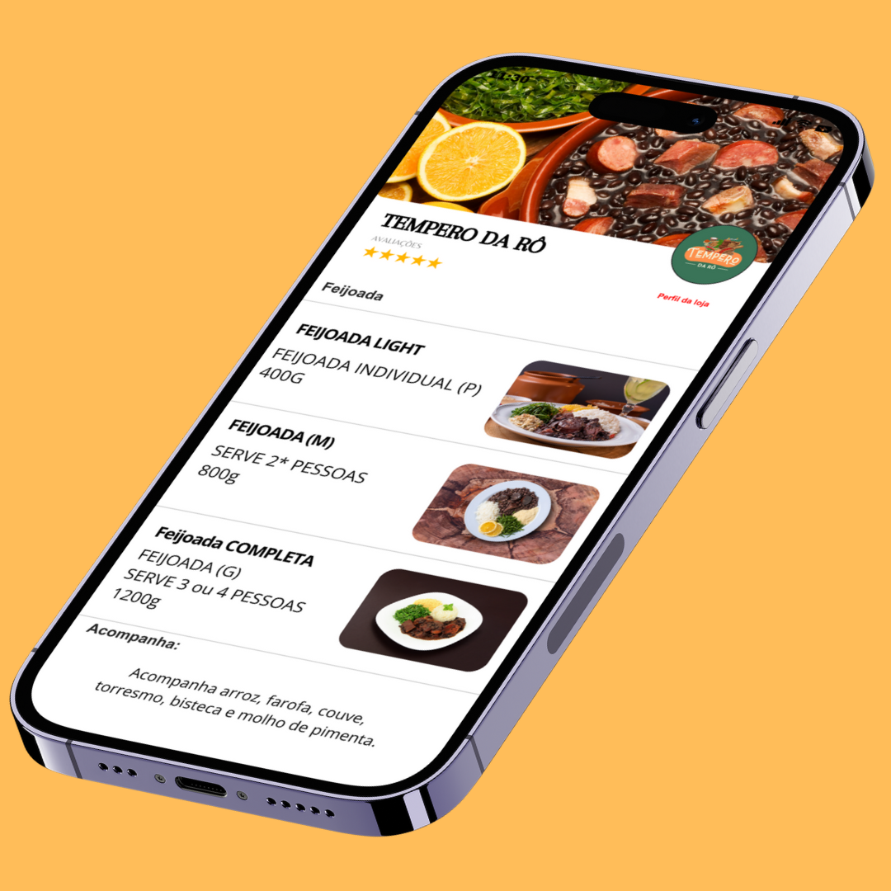
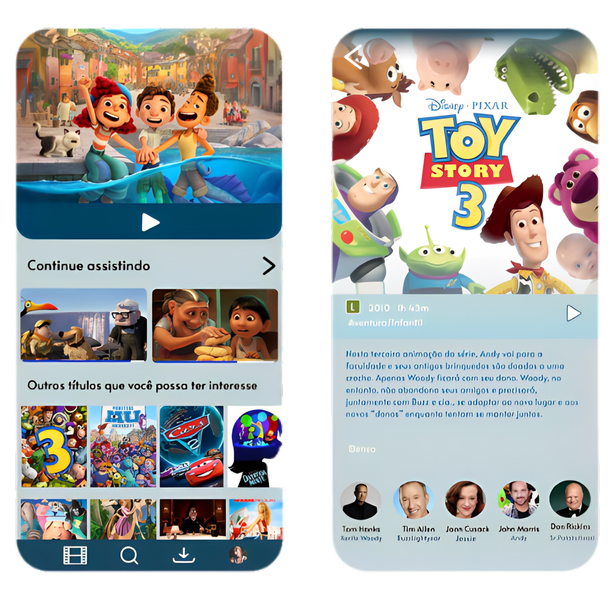
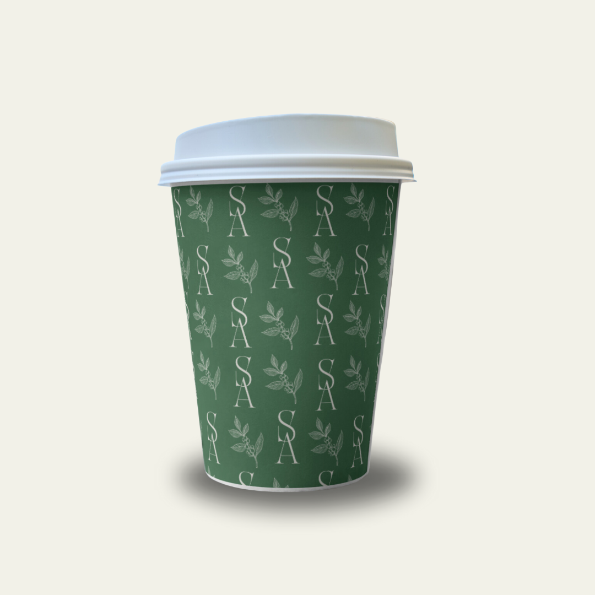

PROJETOS
Como um designer apaixonado por criar experiências visuais memoráveis,
mergulho fundo na arte do UI design e em outras áreas criativas,
como criação de logos e desenvolvimento de mockups.
Com uma abordagem centrada no usuário, cada projeto
é uma jornada para combinar funcionalidade e estética,
transformando ideias em interfaces intuitivas e designs
de marca impactantes. Minha missão é criar soluções visuais
que não apenas cativam, mas também inspiram e conectam.
TEMPERO DA RÔ
kidflix
Sabor e Aroma



